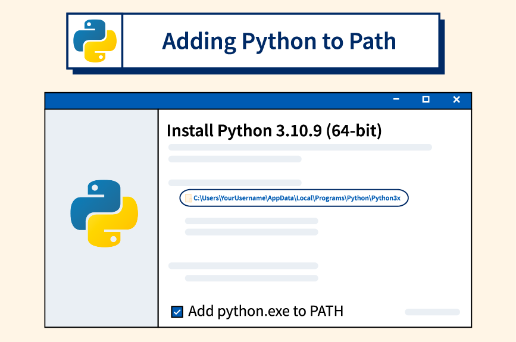
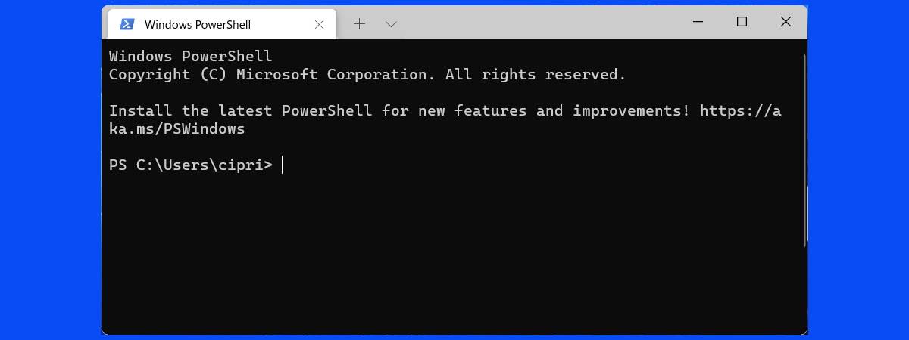

14Python
Scientific Computing
Why Python?
On Python
- Python is free,
- Python is very widely used,
- Python is flexible,
- Python is relatively easy to learn,
- and Python is quite powerful.
Why not Python?
- Python is a general purpose language used for Scientific Computing.
- Not to build apps, build software, manage databases, or develop user interfaces.
- Solve scientific and mathematical problems.
Python libraries
Scientists often use the following:
- Python,
numpy(numerical Python),matplotlib(a suite of plotting tools),scipy(scientific Python), andsympy(symbolic Python).
We’ll get to these.
Running Example
Diving In
- Taking Python as a given, we’ll:
- Use an example of something I helped a student with recently
- Show step-by-step how to use Python
- Introduce a number of Python features to solve the problem more easily.
- This was from an introductory physics class I believe; I don’t know the context.
Motivating Example
- Recently, I helped a student stuck on this:
\[ f(x) = \begin{cases} 9x^2 + 5 & x < 4 \\ 9 & 4 \leq x \leq 8 \\ 2 - x & x > 8 \end{cases} \]
- Find \(f(x)\) for each of the following \(x\) values: \[ \{-1, 4, 5, 8, 11\} \]
Is this “real”?
- Models income tax brackets, one of the most important drivers of human behavior in the largest economies in the world.
- We use a simpler contrived example for now…
| Marginal Tax Rate | Single Taxable Income | Married Filing Jointly or Qualified Widow(er) Taxable Income | Married Filing Separately Taxable Income | Head of Household Taxable Income |
|---|---|---|---|---|
| 10% | $0 – $9,275 | $0 – $18,550 | $0 – $9,275 | $0 – $13,250 |
| 15% | $9,276 – $37,650 | $18,551 – $75,300 | $9,276 – $37,650 | $13,251 – $50,400 |
| 25% | $37,651 – $91,150 | $75,301 – $151,900 | $37,651 – $75,950 | $50,401 – $130,150 |
| 28% | $91,151 – $190,150 | $151,901 – $231,450 | $75,951 – $115,725 | $130,151 – $210,800 |
| 33% | $190,151 – $413,350 | $231,451 – $413,350 | $115,726 – $206,675 | $210,801 – $413,350 |
| 35% | $413,351 – $415,050 | $413,351 – $466,950 | $206,676 – $233,475 | $413,351 – $441,000 |
| 39.6% | $415,051+ | $466,951+ | $233,476+ | $441,001+ |
How to solve?
- Think about how you would solve such a problem.
- What steps would you take?
- What would making solving it hard?
- Keep track of details?
- Performing the arithmetic?
- Anything else?
- Python, in my view, is a way to solve these problems.
Python in action
- My preferred way to do calculation as an experienced Python user is writing code:
- Mathematical expression \[ \begin{cases} 9x^2 + 5 & x < 4 \\ 9 & 4 \leq x \leq 8 \\ 2 - x & x > 8 \end{cases} \]
- Python expression (code)
- I write
x * xfor \(x^2\) because it’s non-obvious how to write “squared” yet.
Arithmetic Operations
- In Python, we can write many of the same arithmetic operations we use in our math and science classes.
Wait?
- Use Python? How?
- To use Python to make this calculation, first we must install Python.
- It is a program, like Firefox, MS Word or Fortnite
Installing Python
Warning!
- There is a very important box to check while installing!
- Be careful working ahead!
- We’ll teach how to fix not checking this box but not for a while
Installation
- We go to the offial webpage to get an installer for our computer:
- Be careful about starting it!
- You can open it and check the next slide.
Add Python to PATH

Why?
- The benefit of adding Python to path is that we can use it at
- <dramatic music>
- The Command Line
- A text-based interface to computing resources, including its ability to do e.g. arithmetic and save notes.
Terminal
- On MS Windows
- I press Windows key, type “terminal” then press enter.
- On MacOS
- I open Launchpad, type “terminal” then press enter.
MacOS

Windows

Expression evaluation
- Returning to the terminal, we can type at the “prompt”.
- On MacOS, perhaps a line that begins with
$and a flashing cursor - On Window, perhaps
PS C:\Users\calvin>PSstands for “powershell” - more latter.C:\Users\calvinis the name of a folder - more latter>is the prompt, with a flashing cursor.
“Run” Python
In the following examples, I remove line numbers to denote they are not Python code snippets.
- On Windows, type
python
Windows
PS C:\Users\calvin> python- On MacOS, type
python3
MacOS
$ python3- On both, press the ↵ᴇɴᴛᴇʀ key.
See Python
- You’ll see something like this:
Python 3.12.5 (tags/v3.12.5:ff3bc82, Aug 6 2024, 20:45:27) [MSC v.1940 64 bit (AMD64)] on win32
Type "help", "copyright", "credits" or "license" for more information.
>>>- Take note of the prompt!
>>>- Those three are how you know it is Python, and not the Terminal, that you are working in.
Example
- If I type
pythonat the command line - Then
9 * -1 * -1 + 5within Python - It will look like this:
PS C:\Users\calvin> python
Python 3.12.5 (tags/v3.12.5:ff3bc82, Aug 6 2024, 20:45:27) [MSC v.1940 64 bit (AMD64)] on win32
Type "help", "copyright", "credits" or "license" for more information.
>>> 9 * -1 * -1 + 5
14
>>>- This is how Python shows that
9 * -1 * -1 + 5is14
Evaluating Expressions
Recall
\[ \begin{cases} 9x^2 + 5 & x < 4 \\ 9 & 4 \leq x \leq 8 \\ 2 - x & x > 8 \end{cases} \] \[ \{-1, 4, 5, 8, 11\} \]
>>> 9 * -1 * -1 + 5
14
>>> 9
9
>>> 9
9
>>> 2 - 8
-6
>>> 2 - 11
-9- This is still quite tedious and annoying!
(In)equality testing
- Like
+or-which we use to calculate numbers… - We can use
<or>to calculate inequalities. - Specifically, we see whether an inequality is
TrueorFalse
Accomodating Keyboards
- Some things aren’t super easy to type.
- I don’t have a “\(\leq\)” key on my keyboard.
- Combine with
=as<=for “less than or equal” or “\(\leq\)”
- We can “chain” inequalities as well - one after another.
A note
- We always put the equal sign
=second.
- A (somewhat confusing) error if we try
=>
>>> 4 => 5
File "<stdin>", line 1
4 => 5
^
SyntaxError: cannot assign to literal= and ==
New Topics
- We have now touch on two new topics:
TrueandFalse- Expressions which don’t evaluate to a number
- Called “booleans”
- “Assignment”
- Associated with the
=sign - Different from inequality testing!
- Associated with the
- We’ll explore both!
Booleans
- Sometimes, a Python expression is a numerical value.
- But it doesn’t have to be!
If
- Booleans are mostly useful for writing
ifstatements.- These are multiline expressions in Python.
- To see the result of multi-line expression, we have to print the result…
Piecewise
- We can see the immediate use of this in a piecewise function!
Else
- Oftentimes, we use
ifwithelse
Elif
- If we have more than two options, we can place a special
elifin the middle.
- By the way, it is extremely obnoxious to manually type
2in 5 different places
Assignment
- We can also assign variables!
- I call this single-equals assignment
- Use a single equals sign
=and some variable name, likex
Double equals equality
- I call it single-equals assignment because sometimes we check if a variable is precisely equal to some value.
- That is somewhat confusingly done with
==double equals equality test.
Double ** Exponentation
- Doubling is used in a few other cases.
- Double asterisk
**is exponentiation.
Piecewise
- We can finally write the piecewise expression!
Code Reuse
Recycle
- It is still extremely tedious to either:
- Copy-paste, or
- Type more than once.
- Also very annoying/difficult to write them many lines without error!
- We introduce the
defkeyword to definefunctions - A way to reuse code we have already written.
def
def+ some function name +(+ some variable name +):
- “Call” functions the same way we call
print- with parens.
return
- It is more common to use
returnthanprintin a function. - When we call a function, we can think of it as expression with some value.
- That value is defined by the value that is return.
Example
- Suppose an interest rate doubles our savings every ~7 years.
- How much savings in 14 years?
Use return
- Now,
double(savings)becomes equal tox + x
- Or even
Piecewise
- We can finally write the piecewise function (was: expression)!
- Function: use many times in many expressions
- Expression: evaluate once and get one answer
Iteration
Tedium
- This is still quite tedious.
Sets
- This is a set:
\[ \{-1, 4, 5, 8, 11\} \]
- A set is an unordered collection of elements.
- In this case, elements are integers - whole numbers.
- Python can also recognize sets!
Type
- To be sure that is, in fact, a set, we use the helpful built-in
type()to ask Python.
- We have also worked with integers.
- And booleans -
TrueandFalsevalues.
Loops
- With a set, do something to each element
- In Python, use a
forloop:- The
forkeyword - The name to refer to an element, like
eorx - The
inkeyword - The set/collection (or its variable name)
- The
:colon special character - An indented new line of code
- The
Example
- for element in collection
- do thing
- What do you see?
Example
- What if we just try to print the elements?
- Easier to think about!
- What do you see?
Ordering
- Recall: “A set is an unordered collection of elements”.
- We need to put things in order!
- The most common way to do this in Python is with a list.
- Almost the same as sets, just use “boxy brackets”
[]
Example
- for element in collection
- do thing
- What do you see?
Seeing lists
- We can also use lists to print multiple values!
- Very helpful for keeping track of things!
Updating lists
- Each element is a lot like a variable.
- They just have a name and number, use
[] - The initial element is number
0(not 1)
- They just have a name and number, use
- And like variables, we can assign a value with
=
Adding lists
- Lists also helpfully support addition with
+
- We often use this to make new lists.
- This pattern also works with numbers!
Exercise
Income tax
- Recall the example of a piecewise function:
| Marginal Tax Rate | Single Taxable Income | Married Filing Jointly or Qualified Widow(er) Taxable Income | Married Filing Separately Taxable Income | Head of Household Taxable Income |
|---|---|---|---|---|
| 10% | $0 – $9,275 | $0 – $18,550 | $0 – $9,275 | $0 – $13,250 |
| 15% | $9,276 – $37,650 | $18,551 – $75,300 | $9,276 – $37,650 | $13,251 – $50,400 |
| 25% | $37,651 – $91,150 | $75,301 – $151,900 | $37,651 – $75,950 | $50,401 – $130,150 |
| 28% | $91,151 – $190,150 | $151,901 – $231,450 | $75,951 – $115,725 | $130,151 – $210,800 |
| 33% | $190,151 – $413,350 | $231,451 – $413,350 | $115,726 – $206,675 | $210,801 – $413,350 |
| 35% | $413,351 – $415,050 | $413,351 – $466,950 | $206,676 – $233,475 | $413,351 – $441,000 |
| 39.6% | $415,051+ | $466,951+ | $233,476+ | $441,001+ |
Singles only…
| Rate | From |
|---|---|
| 10% | 0 |
| 15% | 9275 |
| 25% | 37650 |
| 28% | 91150 |
| 33% | 190150 |
| 35% | 413350 |
| 39.6% | 415050 |
Motivating example
- How much would a single making 400k pay?
- 10% on 9275
- 15% on 37650 - 9275
- 25% on 91150 - 37650
- 28% on 190150 - 91150
- 33% on 400000 - 190150
| Rate | From |
|---|---|
| 10% | 0 |
| 15% | 9275 |
| 25% | 37650 |
| 28% | 91150 |
| 33% | 190150 |
| 35% | 413350 |
| 39.6% | 415050 |
Sum it up!
- Watch out for order-of-operations!
Add as you go
- We may set a variable to an expression over that variable
- I think of this as an “old” version of the variable on the right side of the equal sign.
Assign-update
- We may use an “assignment operator”
+=- Reassign a variable based on the result of an arithmetic operation.
Exercise
- Write function
def single_tax(pay):- Return tax cost.
- Return not print!
- Bonus: Also write
single_tax_ratewhich returns the percent tax rate at some income level.
| Rate | From |
|---|---|
| 10% | 0 |
| 15% | 9275 |
| 25% | 37650 |
| 28% | 91150 |
| 33% | 190150 |
| 35% | 413350 |
| 39.6% | 415050 |
Solution
- Spoiler alert!
Code
def single_tax(pay):
tax = 0
if pay > 415050:
tax += (pay - 415050) * .396
pay = 415050
if pay > 413350:
tax += (pay - 413350) * .35
pay = 413350
if pay > 190150:
tax += (pay - 190150) * .33
pay = 190150
if pay > 91150:
tax += (pay - 91150) * .28
pay = 91150
if pay > 37650:
tax += (pay - 37650) * .25
pay = 37650
if pay > 9275:
tax += (pay - 9275) * .15
pay = 9275
return tax + pay * .1Challenge Problem
- Calculate at what income does the tax rate reach the second highest marginal tax rate of 35%?
- That is, at what
paydoestax == pay * .35
- That is, at what
Bonus Solution
single_taxwith loops